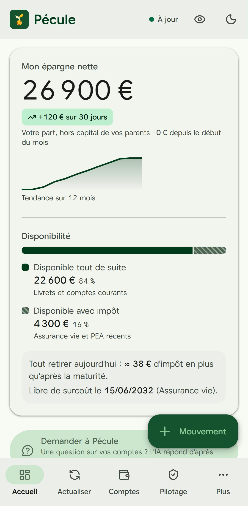
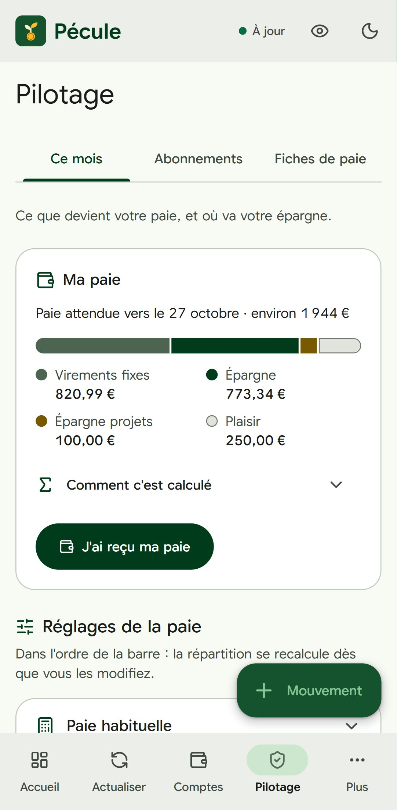
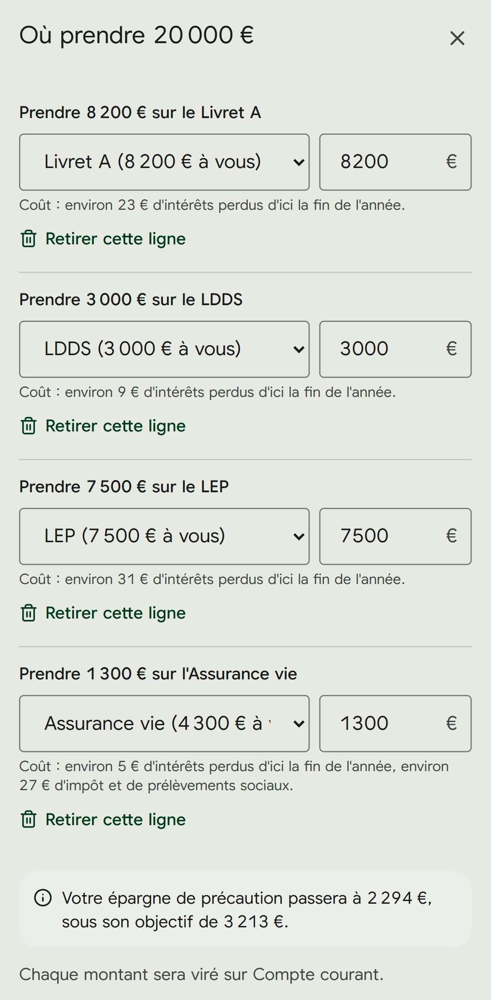

Pécule
Faites pousser votre épargne.
Pécule est une application web gratuite pour suivre son épargne personnelle : livrets, assurance vie, PEA, épargne salariale. Elle est calibrée pour la fiscalité française et pensée d'abord pour le téléphone. Il n'y a ni base de données ni compte à créer : vos données restent dans un seul fichier, sur votre propre Google Drive.



Ce que fait Pécule
- Tous vos comptes d'épargne au même endroit, avec leurs plafonds, leurs taux et leurs intérêts réellement acquis (règle des quinzaines), et la lecture facultative d'un relevé bancaire (PDF, capture d'écran, ou fichier OFX ou CSV lu sur votre téléphone) pour mettre un solde à jour.
- Ma paie : combien placer chaque mois, et où, d'après votre paie et vos charges fixes ; la paie reçue se répartit en un geste.
- Les moments de l'année, guidés, sans menu en plus : l'argent reçu (remboursement, vente, cadeau, avec ce qu'il faut déclarer), « J'ai besoin d'argent : où le prendre ? » (le compte le moins cher d'abord, avec ce que le retrait coûte en euros), les nouveaux taux officiels appliqués à tous vos comptes en un geste, et la clôture de l'année en une seule feuille (intérêts crédités, relevés, objectif de l'année suivante).
- Fiscalité : impôt sur le revenu estimé, net d'un retrait (PFU, maturité de l'assurance vie et du PEA), éligibilité au LEP, aide à la déclaration de revenus, et une veille hebdomadaire des taux et plafonds officiels qui vous propose les changements.
- À faire, chiffré en euros : argent qui dort, compte mieux rémunéré qui a de la place, livret bientôt plein.
- Envies d'achats : un nom, un prix, une catégorie ; Pécule les compare à ce que vous pouvez dépenser sans toucher à votre épargne de précaution.
- Demander à Pécule (facultatif, avec votre propre clé Gemini) : posez une question sur vos chiffres ; rien de la conversation n'est gardé.
- Motivation : bons mois, jalons et point de paie, pour garder le cap sans culpabiliser.
- « Et si… » : simulez un achat, une pause ou un autre montant d'épargne, et voyez votre épargne dans 1 à 5 ans.
- Agenda et rappels : jour de paie, révision des taux réglementés, échéances, avec des notifications facultatives.
- Historique et bilans : évolution de l'épargne, taux d'épargne mois par mois, « Votre année » en quelques pages.
- Sauvegardes : copies mensuelles sur votre Drive et, si vous le souhaitez, une sauvegarde de secours chiffrée avec un code que vous seul détenez.
- Application installable sur téléphone et ordinateur (PWA), utilisable hors ligne.
Pourquoi l'app demande l'accès à Google Drive
Pécule n'a pas de base de données : elle enregistre vos informations dans un fichier suivi_epargne.json sur votre Google Drive. Elle utilise pour cela l'autorisation Google la plus restreinte, « drive.file » : l'app ne peut voir et modifier que les fichiers qu'elle a créés elle-même, ou ceux que vous choisissez de lui ouvrir (par exemple une fiche de paie). Elle n'a aucun accès au reste de votre Drive.
Votre adresse e-mail Google sert uniquement à vous identifier sur le petit serveur qui maintient votre connexion et envoie les notifications. Pécule n'envoie aucun e-mail, n'affiche aucune publicité et ne revend aucune donnée.
Gratuit et ouvert
Pécule est un projet personnel, non commercial. Son code source est public, sous licence libre AGPL v3 : github.com/antoninnourisson-cloud/suivi-epargne.
Pécule n'est pas un conseiller financier : ses calculs sont des estimations à vérifier auprès des sources officielles.